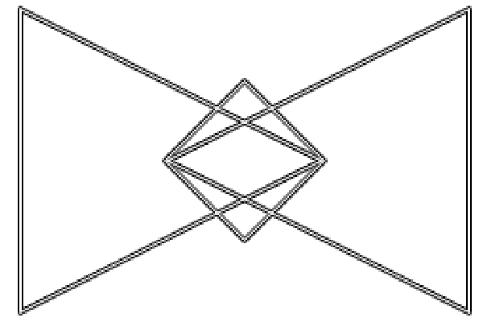

<!-- gran contenedor -->
<<<<<<< HEAD
<div class="container-fluid img-caracteristica  parallax" id="mozovirtual">

=======
<div class="container-fluid img-mozovirtual  parallax">
    
>>>>>>> kevin

            <!-- Contenedor semi oscuro -->
            <div class="contenedor-mozo">
                <div class="row text-center text-white d-flex  align-items-center">
                    <div class="col-12 mt-5">
                        <h1>MozoVirtual</h1>
                    </div>
                </div>


                <div class="row text-center mx-auto mt-4">
                    <div class="col-12 col-md-6 px-5">
                        
                    </div>

                    <!-- Texto informativo -->
                    <div class="col-12 col-md-6 d-flex align-items flex-column my-auto">
                        <div class="container mb-4">
                            <h2>¿Qué es MozoVirtual?</h2>
                        </div>


                        <div class="container">
                                <p>Es una plataforma virtual para aquellos comercios
                                        que realicen actividades respecto a la Gastronomía
                                        que les permite administrar pedidos de clientes
                                        mediante un MENÚ VIRTUAL.
                                </p>
                                <p>Los Usuarios pueden acceder a dicho Menú Virtual
                                        mediante el uso de una APP.
                                </p>
                        </div>

                    </div>
                    <!-- fin Texto informativo -->

                </div>
            </div>
            <!-- fin Contenedor semi oscuro -->
<<<<<<< HEAD


=======
        
    
>>>>>>> kevin
    </div>
